ggcube is a ggplot2 extension for 3D plotting. It provides 3D geoms, stats, and a 3D coordinate system that let you build 3D visualizations using the familiar ggplot2 grammar: map your data to aesthetics, add layers, and customize the result with scales, guides, and themes.
3D plots can be excellent for exploration, communication, and art. But it’s important to note that they can also give a distorted or obscured view of the data — 2D alternative are generally recommended when precise quantitative data representation is important.
The basics
The essential ingredient of a ggcube plot is coord_3d().
Adding it to a standard ggplot that includes a z aesthetic
creates a 3D plot:
ggplot(mpg, aes(x = displ, y = hwy, z = drv, color = class)) +
geom_point() +
coord_3d()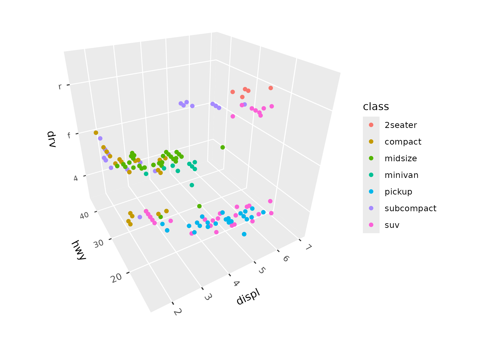
Some standard ggplot2 layers like geom_point() work in
3D automatically. ggcube also provides 3D-specific layer functions for
surfaces, paths, volumes, and text, described below.
Because ggcube works within ggplot2’s 2D graphics engine, there are some important things to understand about how rendering works. Each 3D layer projects its geometry onto a 2D plane, with depth sorting to determine which elements appear in front of others. This sorting happens within each layer, but not across layers — just as in standard ggplot2, later layers are drawn on top of earlier ones regardless of their 3D depth. This means that layer order in your code matters, and complex multi-layer scenes may require some thought about stacking.
Controlling the view
coord_3d() controls how the 3D scene is projected onto
2D. Rotation is specified via three angles — pitch (tilt
around the x-axis), roll (tilt around the y-axis), and
yaw (spin around the z-axis):
ggplot(mpg, aes(displ, hwy, drv, color = class)) +
geom_point() +
coord_3d(pitch = 0, roll = 60, yaw = 0, dist = 1.4,
ratio = c(2, 1, 1), panels = "all") +
theme(panel.border = element_rect(color = "black"),
panel.foreground = element_rect(alpha = .1))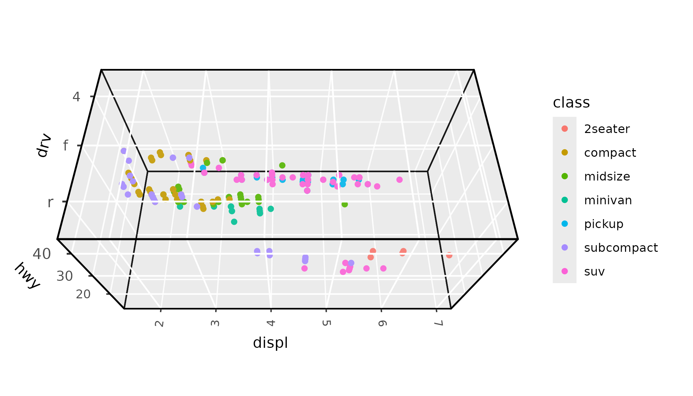
Perspective projection is on by default, making distant objects
appear smaller. The dist parameter controls the strength of
this effect (larger values = less distortion), and
persp = FALSE switches to orthographic projection where
parallel lines stay parallel.
The scales parameter controls how axis ranges map to
visual size. "free" (the default) stretches each axis
independently to fill the cube, while "fixed" preserves the
relative scale of the data (like coord_fixed() in 2D). The
ratio parameter lets you set custom proportions for the
three axes. And zoom adjusts overall framing without
changing the rotation or projection.
See the 3D view article for a comprehensive guide to all view parameters.
3D layers
Most standard ggplot2 geoms are designed around 2D coordinate
assumptions, and won’t render correctly with coord_3d().
(An exception is geom_point(), which works out of the box
as shown above, albeit with ordering and sizing limitations.) ggcube
provides a range of 3D-native layer functions that cover common 3D plot
types, including points, surfaces, bars, paths, and text.
Here’s a quick tour of the main categories.
Surfaces
Several geoms and stats work together to render surfaces.
geom_surface_3d() renders data as a tessellated surface,
geom_contour_3d() creates layer-cake contour stacks, and
geom_ridgeline_3d() shows cross-sectional slices:
ggplot(mountain, aes(x, y, z)) +
geom_surface_3d(aes(fill = z, color = z)) +
scale_fill_viridis_c() + scale_color_viridis_c() +
coord_3d(ratio = c(1.5, 2, 1), expand = FALSE, panels = "zmin",
light = light(direction = c(1, 0, 0))) +
guides(fill = guide_colorbar_3d()) +
theme_light()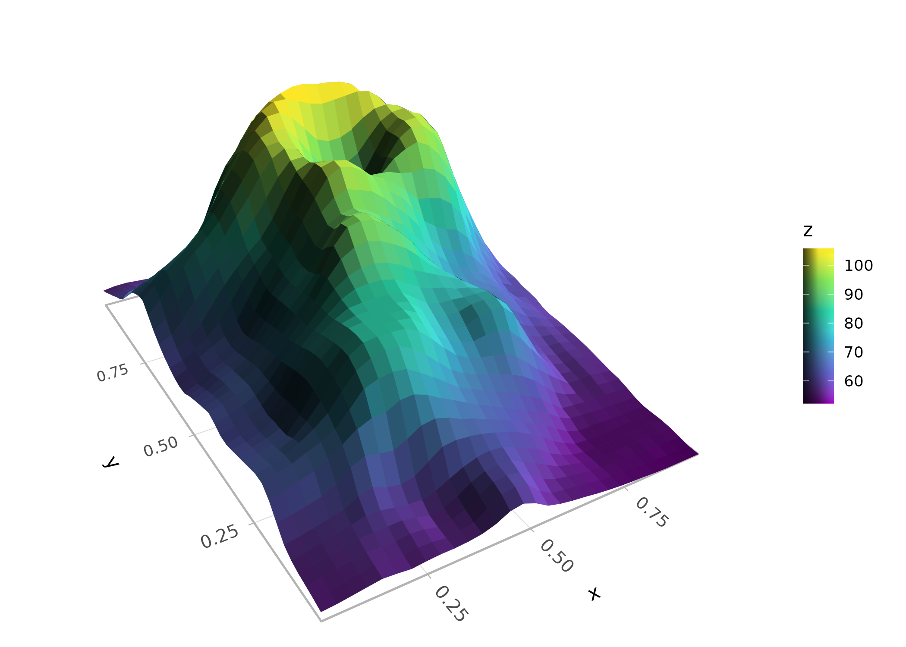
Stats like stat_function_3d(),
stat_smooth_3d(), and stat_density_3d()
generate surface data from functions, model fits, or kernel density
estimates. These stats can be paired with any of the surface geoms. See
the 3D
surfaces article for more detail on surface plotting options.
Points
geom_point_3d() extends scatter plots with depth-scaled
point sizes (closer points shown larger), proper depth sorting (closer
points plotted on top), and optional reference lines and points that
project onto cube faces:
ggplot(mpg, aes(x = displ, y = hwy, z = drv, fill = class)) +
geom_point_3d(size = 3, shape = 21, color = "black", stroke = .1,
ref_lines = TRUE, ref_faces = c("ymax", "xmax")) +
coord_3d()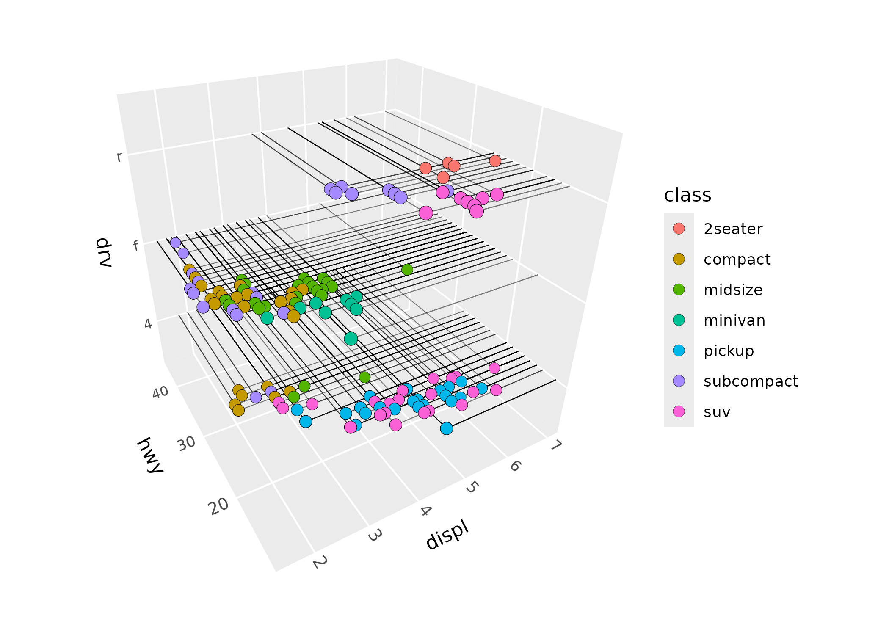
Paths
geom_path_3d() connects observations with depth-sorted,
depth-scaled line segments:
x <- seq(0, 20*pi, pi/16)
spiral <- data.frame(x = x, y = sin(x), z = cos(x), time = 1:length(x))
ggplot(spiral, aes(x, y, z, color = time)) +
geom_path_3d() +
scale_color_gradientn(colors = c("blue", "purple", "red", "orange")) +
coord_3d() +
theme_light()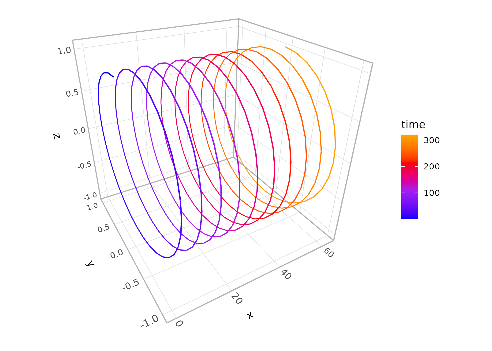
geom_segment_3d() is also available for drawing
individual segments defined by start and end coordinates.
Prisms
geom_col_3d() produces 3D column charts,
geom_bar_3d() creates 3D histograms with automatic binning,
and geom_voxel_3d() renders arrays of cubes:
ggplot(iris, aes(Species, Sepal.Length, fill = Species)) +
geom_bar_3d(bins = 20, width = c(.5, 1)) +
coord_3d(scales = "fixed", ratio = c(1, 3, .25), yaw = 60) +
scale_z_continuous(expand = c(0, 0)) +
theme(legend.position = "none")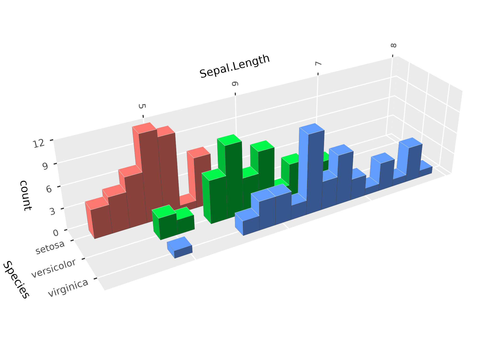
Hulls
geom_hull_3d() computes and renders triangulated hulls
from 3D point clouds, including convex and alpha hulls:
ggplot(sphere_points, aes(x, y, z)) +
geom_hull_3d(method = "convex", fill = "#9e2602", color = "#5e1600") +
coord_3d()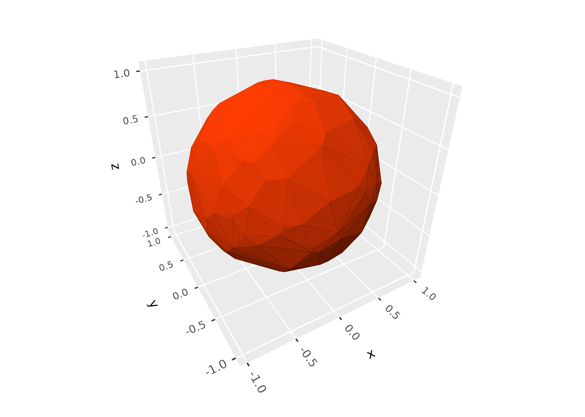
Distributions
stat_distributions_3d() computes 1D kernel density
estimates per group and arranges them as ridgeline surfaces, the 3D
analog of ggridges::geom_density_ridges():
ggplot(iris, aes(y = Sepal.Length, x = Species, fill = Species)) +
stat_distributions_3d() +
scale_z_continuous(expand = expansion(mult = c(0, NA))) +
coord_3d() +
theme(legend.position = "none")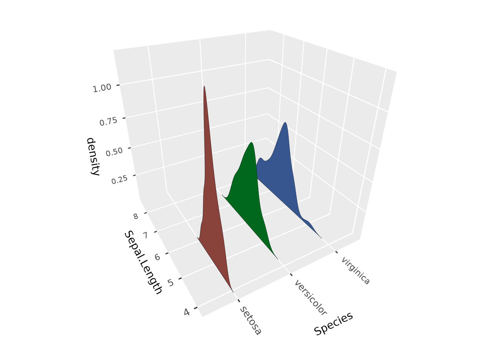
Text
geom_text_3d() renders text in 3D, either as “billboard”
labels that always face the camera, or as polygon outlines that can be
oriented in any direction:
df <- expand.grid(x = c("H", "B"), y = c("a", "o", "u"), z = c("g", "t"))
df$label <- paste0(df$x, df$y, df$z)
ggplot(df, aes(x, y, z, label = label, fill = x)) +
geom_text_3d(method = "polygon", facing = "zmax",
size = 5, weight = "bold") +
coord_3d(scales = "fixed", light = NULL)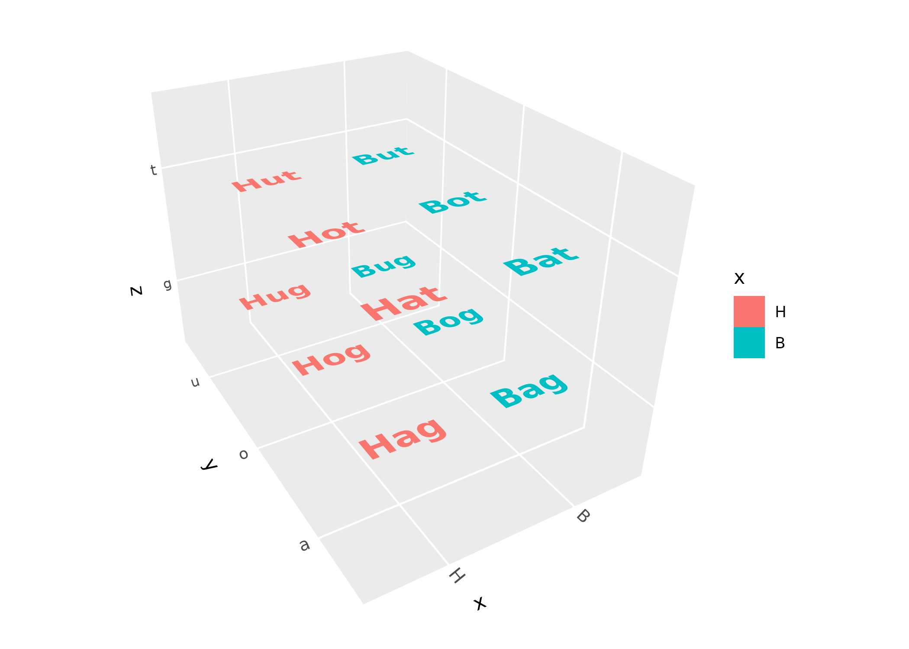
Lighting
Lighting modifies the fill and/or color of polygon faces based on
their orientation relative to a light source, giving surfaces a sense of
depth and shape. It’s controlled via the light() function,
which can be passed to coord_3d() (applying to all layers)
or to individual layer functions (overriding the coord-level
setting):
p <- ggplot(sphere_points, aes(x, y, z)) +
geom_hull_3d(fill = "#9e2602", color = "#5e1600")
p + coord_3d(light = light(method = "direct", mode = "hsl",
direction = c(0, 0, 1)))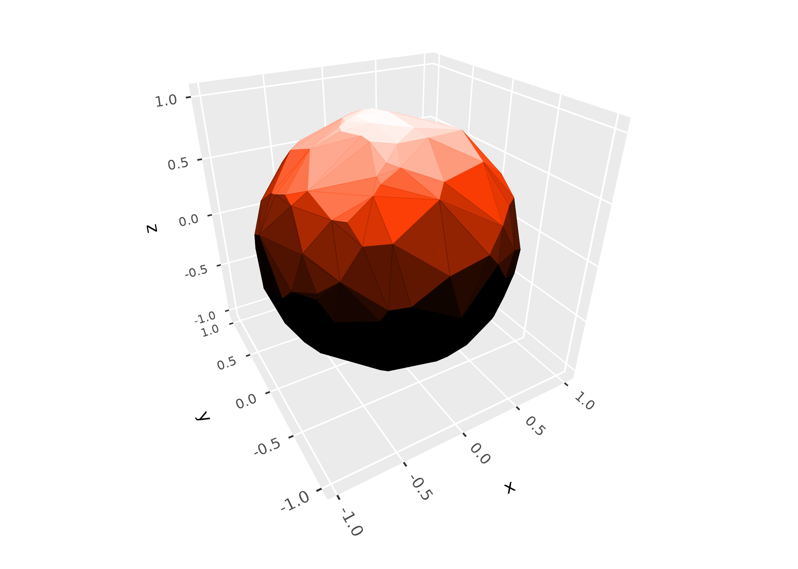
Use light = "none" to disable lighting entirely, or
light = NULL in a layer to inherit the coord-level setting.
For a comprehensive guide to lighting methods, color modes, light
direction, and backface handling, see the lighting
article.
Scales, guides, and themes
Z-axis scales
ggcube provides scale_z_continuous() and
scale_z_discrete() for controlling the z-axis, with the
same interface as their x/y counterparts. zlim() is a
shorthand for setting z-axis limits:
ggplot(mtcars, aes(mpg, wt, z = qsec)) +
geom_point() +
zlim(15, 20) +
coord_3d()Shaded guides
When lighting is active, standard color guides don’t reflect the
shading visible in the plot. guide_colorbar_3d() and
guide_legend_3d() create guides that show the range of
shaded colors:
ggplot(mountain, aes(x, y, z, fill = z)) +
stat_surface_3d(light = light(mode = "hsl", direction = c(1, 0, 0))) +
guides(fill = guide_colorbar_3d()) +
scale_fill_gradientn(colors = c("tomato", "dodgerblue")) +
coord_3d()Panels and themes
The panels argument to coord_3d() controls
which cube faces are drawn. Faces behind the data are “background”
panels; faces in front are “foreground” panels (which default to
semi-transparent so they don’t obscure the data):
ggplot(sphere_points, aes(x, y, z)) +
geom_hull_3d() +
coord_3d(panels = "all") +
theme(panel.background = element_rect(color = "black"),
panel.border = element_rect(color = "black"),
panel.foreground = element_rect(alpha = .3),
panel.grid.foreground = element_line(color = "gray", linewidth = .25),
axis.text = element_text(color = "darkblue"),
axis.text.z = element_text(color = "darkred"),
axis.title = element_text(margin = margin(t = 30)),
axis.title.x = element_text(color = "magenta"))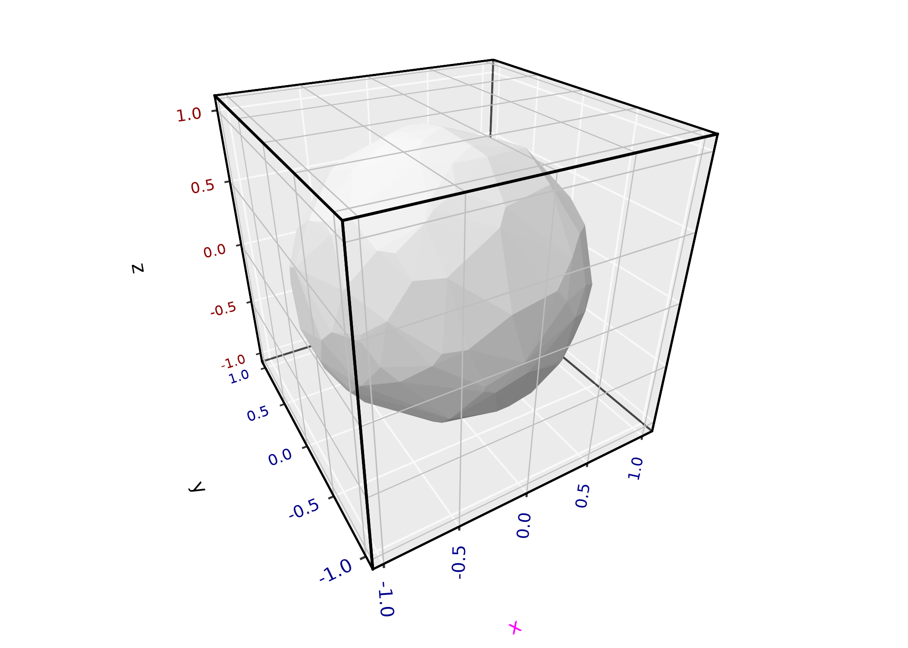
Standard ggplot2 themes and theme() customization work
as expected. ggcube adds foreground-specific elements
(panel.foreground, panel.grid.foreground,
panel.border.foreground) and z-axis text elements
(axis.text.z, axis.title.z). ggcube’s
element_rect() extends ggplot2’s version with an
alpha parameter for transparency. For details, see the
theming section of the 3D
coordinates article.
Annotations
annotate_3d() adds reference geometry — points, text
labels, or segments — to any 3D layer. Unlike adding a separate layer,
annotations are embedded within the host layer so they participate in
the same depth sorting:
summit <- filter(mountain, z == max(z))
ggplot(mountain, aes(x, y, z)) +
geom_contour_3d(
annotate = list(
annotate_3d("point", x = summit$x, y = summit$y, z = summit$z, color = "red"),
annotate_3d("text", x = summit$x, y = summit$y, z = summit$z, color = "red",
label = "Summit", fontface = "bold", vjust = -1)
), fill = "black"
) +
coord_3d(ratio = c(2, 3, 1.5), light = "none")Mixing 2D and 3D
position_on_face() lets you project layers onto cube
faces, enabling a mix of 3D and 2D content. You can flatten a 3D layer
onto a face, or place a natively 2D layer (like
stat_density_2d()) onto a specific face using the
axes parameter:
ggplot(iris, aes(Sepal.Length, Sepal.Width, Petal.Length,
color = Species, fill = Species)) +
coord_3d() + xlim(4, 8) +
stat_density_2d(position = position_on_face(faces = "zmin", axes = c("x", "y")),
geom = "polygon", alpha = .1, linewidth = .25) +
geom_hull_3d(position = position_on_face("ymax"), alpha = .5) +
geom_point_3d(shape = 21, color = "black", stroke = .25)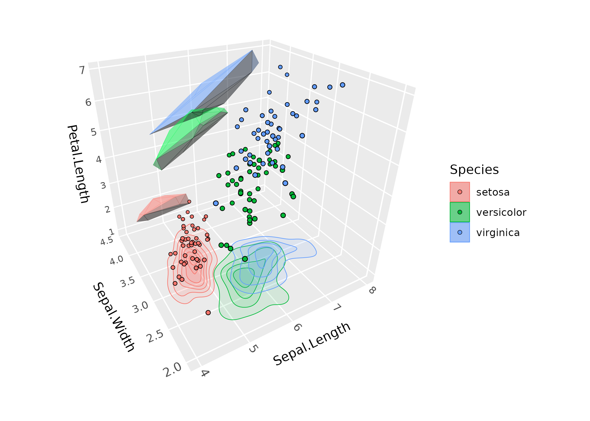
Interactivity & animation
A major limitation of 3D figures is that you can’t get a full view of
the data from any single angle. One way to mitigate this is by rotating
the figure to view the data from different directions. ggcube offers two
options for rotating 3D plots. animate_3d() makes a gif or
movie of a spinning plot across a specified sequence of rotation angles,
while orbit_3d() produces an interactive HTML widget that
you can drag to rotate. Both functions take a pre-made plot and a range
of rotation angles:
p <- ggplot(mountain, aes(x, y, z)) +
geom_contour_3d(fill = "black", color = "white", linewidth = .5) +
coord_3d(ratio = c(1.5, 2, 1), light = "none", zoom = 1.25) +
theme_void()
orbit_3d(p, yaw = c(360, 0), roll = c(-90, 0), n = c(24, 8),
start = c(yaw = 300, roll = -60))See the animation and interaction article for more examples.